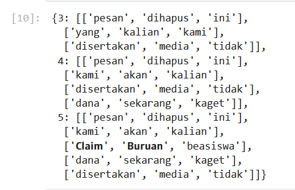

Laporan Analisis Konten WhatsApp Group
Nama :Faizal Dwi Saputra
Nim :L200220257
Pendahuluan
Analisis ini dilakukan untuk mengelompokkan pesan dari grup WhatsApp berdasarkan isi pesan. Data terdiri dari log pesan yang diekspor dari beberapa grup WhatsApp, yang dianalisis menggunakan teknik clustering.
Proses Analisis
- Preprocessing: Data teks diubah menjadi representasi numerik menggunakan TF-IDF.
- Clustering: Pesan dikelompokkan menjadi 3, 4, dan 5 cluster menggunakan algoritma k-Means.
Hasil Clustering
3 Cluster
| Cluster |
Kata Kunci |
| Cluster 0 |
yang, kami, akan |
| Cluster 1 |
disertakan, media, tidak |
| Cluster 2 |
pesan, dihapus, ini |
4 Cluster
| Cluster |
Kata Kunci |
| Cluster 0 |
pesan, dihapus, ini |
| Cluster 1 |
kami, akan, kalian |
| Cluster 2 |
disertakan, media, tidak |
| Cluster 3 |
dana, sekarang, kaget |
5 Cluster
| Cluster |
Kata Kunci |
| Cluster 0 |
kami, akan, kalian |
| Cluster 1 |
dana, sekarang, kaget |
| Cluster 2 |
pesan, dihapus, ini |
| Cluster 3 |
disertakan, media, tidak |
| Cluster 4 |
𝗖𝗹𝗮𝗶𝗺, 𝗕𝘂𝗿𝘂𝗮𝗻, beasiswa |
Hasil Cluster berbentuk gambar

Kesimpulan
Clustering berhasil mengelompokkan pesan ke dalam 3 hingga 5 cluster. Setiap cluster memiliki kata kunci yang mencerminkan tema utama dari pesan. Analisis ini dapat membantu memahami topik dominan dalam grup WhatsApp.